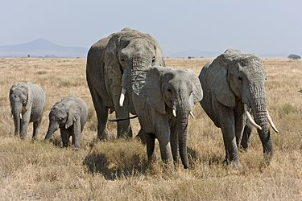
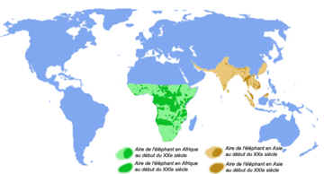

| Elefanter | |
|---|---|
|  | |
| Savannelefant (Loxodonta africana). | |
| Systematik | |
| Domän | Eukaryoter |
| Eykaryota | |
| Rike | Djur |
| Animalia | |
| Stam | Ryggsträngsdjur |
| Vertebrata | |
| Klass | Däggdjur |
| Mammalia | |
| Ordning | Elefantdjur |
| Proboscidea | |
| Familj | Elefanter |
| Elephantidae | |
| Vetenskapligt namn | |
| Auktor | Gray,1821 |
| Utbredning | |
|  | |
Elefanter (Elephantidae) är en familj inom däggdjursordningen elefantdjur. Elefanterna är den enda familjen av snabeldjur som inte dött ut. Familjen elefanter omfattar asiatisk elefant, afrikansk savannelefant (tidigare kallad stäppelefant) och afrikansk skogselefant,[1] samt mammutar och ett antal andra utdöda grupper av elefanter.
Elefanter är en jämförelsevis ung grupp i ordningen snabeldjur (Proboscidea). Ordningen snabeldjur uppkom under senare eocen för 55 miljoner år sedan i norra Afrika.[2] Inom gruppen utvecklades ett flertal familjer som idag är utdöda, som Moeritheriidae, Deinotheriidae, Gomphotheriidae och Mammutidae. Dessa taxa liknade alla dagens elefanter men räknas inte till samma familj. Några av de nämnda grupperna levde fram till senaste istiden samtidigt med elefanterna. Elefanterna utvecklades ur familjen Gomphotheriidae under miocen för ungefär 6 miljoner år sedan med släkten som Primelephas[2] och Stegotetrabelodon.
Släktet Elephas uppkom under tidigt pliocen i Afrika och spred sig sedan över Eurasien.[2] En av de mest kända utdöda arterna i släktet är Elephas antiquus. De nordligaste fossilfynden av arten är kända från Thüringen och södra Polen. Till släktet hör även några utdöda dvärgformer som levde under pleistocen på sydostasiatiska öar och på öar i Medelhavet. Sedan slutet av pleistocen är släktet begränsat till Asien och idag finns bara arten asiatisk elefant (Elephas maximus) kvar. Släktet Loxodonta är bara känt från Afrika sedan mellersta pliocen.[2]
Idag finns tre arter av ordningen snabel- eller elefantdjur kvar som alla tillhör familjen elefanter. :[1]